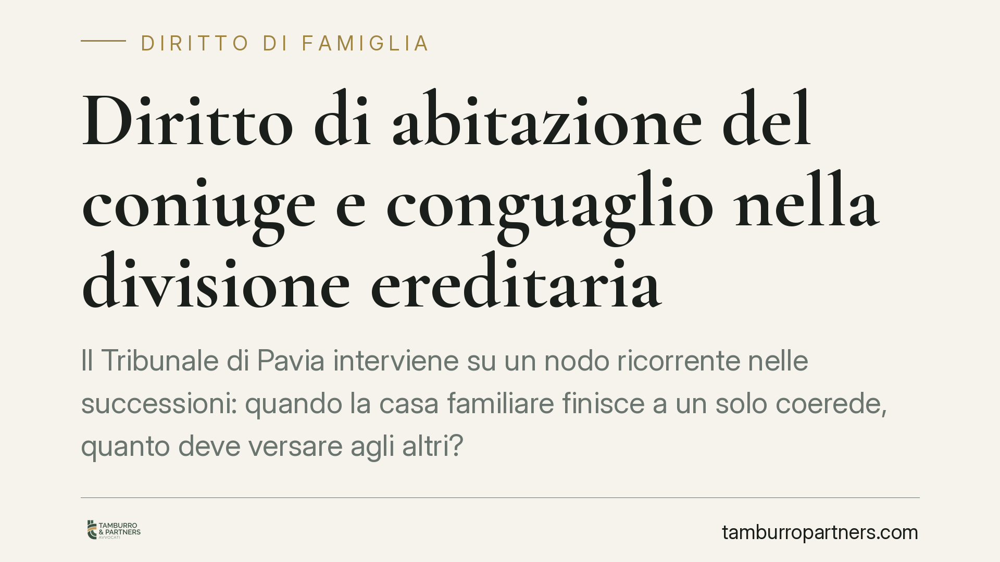

Diritto di abitazione del coniuge e conguaglio nella divisione ereditaria
Il Tribunale di Pavia interviene su un nodo ricorrente nelle successioni: quando la casa familiare finisce a un solo coerede, quanto deve versare agli altri? Il diritto di abitazione del coniuge superstite riduce il valore dell'immobile e, di conseguenza, il conguaglio dovuto. Con un'ulteriore precisazione sul criterio di rivalutazione da applicare.

Il caso deciso dal Tribunale di Pavia
Alla morte del titolare di un immobile, gli eredi devono dividere il patrimonio. Quando la casa è indivisibile – non si può, cioè, materialmente frazionare in porzioni autonome – la legge consente di assegnarla per intero al coerede titolare della quota maggiore. Chi la riceve, però, deve versare agli altri una somma in denaro: il conguaglio.
Il Tribunale di Pavia (sentenza n. 770/2026) ha affrontato la questione in una successione che coinvolgeva il coniuge superstite e altri coeredi, tra cui un nipote. Il punto controverso: il diritto di abitazione riconosciuto per legge al coniuge incide sul valore della casa da dividere?
La risposta del giudice è affermativa. E le conseguenze economiche sono rilevanti.
Inquadramento normativo
L'art. 540, secondo comma, del Codice civile riserva al coniuge superstite il diritto di abitazione sulla casa adibita a residenza familiare, oltre al diritto di uso sui mobili che la corredano. Si tratta di un diritto reale che grava sull'immobile a prescindere da chi ne diventi proprietario: il coniuge può continuare ad abitarvi.
Gli artt. 718 e 720 c.c. regolano invece la divisione. Il primo afferma il principio secondo cui ciascun coerede ha diritto alla sua quota in natura. Il secondo prevede che, quando il bene non è comodamente divisibile, esso venga assegnato per intero al coerede con la quota maggiore, con obbligo di conguaglio verso gli altri.
Il ragionamento del Tribunale collega le due discipline. Se sull'immobile grava il diritto di abitazione del coniuge, il bene assegnato vale meno: chi lo riceve acquista una proprietà "gravata", non piena. Di conseguenza, il valore su cui calcolare il conguaglio deve essere decurtato del valore economico del diritto di abitazione.
La scelta degli indici OMI
La sentenza aggiunge un profilo tecnico spesso trascurato. Per aggiornare il valore dell'immobile al momento della divisione, il Tribunale ha applicato gli indici dell'Osservatorio del Mercato Immobiliare (OMI) dell'Agenzia delle Entrate, anziché gli indici ISTAT.
La differenza non è formale. Gli indici ISTAT misurano la variazione generale del costo della vita; gli indici OMI riflettono l'andamento specifico del mercato immobiliare per zona e tipologia. Poiché l'oggetto della divisione è proprio un immobile, il criterio OMI restituisce un valore più aderente alla realtà del bene. La consulenza tecnica d'ufficio ha fornito i dati su cui il giudice ha fondato la stima.
Cosa cambia per gli eredi
Per il coniuge superstite la pronuncia è favorevole: se è lui il coerede assegnatario, il conguaglio da versare agli altri sarà più contenuto, perché il diritto di abitazione riduce il valore della casa.
Per gli altri coeredi – figli, nipoti, parenti chiamati alla successione – l'effetto è opposto: riceveranno un conguaglio inferiore rispetto a quello calcolato sul valore pieno dell'immobile.
La scelta dell'indice di rivalutazione, poi, può spostare cifre significative in un senso o nell'altro, soprattutto in zone dove il mercato immobiliare ha avuto andamenti diversi dall'inflazione.
È bene ricordare che si tratta di una pronuncia di merito: non vincola altri tribunali, ma offre un'indicazione argomentativa utile in casi analoghi.
Cosa fare in concreto
- Verificate la sussistenza del diritto di abitazione. Accertate se l'immobile era effettivamente la residenza familiare e se il coniuge superstite ne conserva l'uso: è la condizione dell'art. 540 c.c.
- Richiedete una stima aggiornata. Fate valutare l'immobile con criteri di mercato coerenti (indici OMI per la specifica zona), non con la mera rivalutazione ISTAT.
- Quantificate il valore del diritto di abitazione. In sede di divisione, chiedete che la stima tenga conto della decurtazione derivante dal diritto reale che grava sul bene.
- Valutate una divisione consensuale prima del giudizio. Un accordo condiviso sulla stima e sui criteri di rivalutazione evita i tempi e i costi della causa e della CTU.
- Confrontatevi con un professionista sui profili tecnici. La scelta dell'indice e il calcolo del conguaglio incidono direttamente sull'importo dovuto o spettante.
---
*Contributo informativo a cura di Tamburro & Partners - Avv. Giuseppe Tamburro. Non costituisce parere legale.*
Ogni famiglia ha il suo equilibrio.
Separazione, divorzio, affidamento, assegno: se vuoi un confronto riservato su una specifica situazione, scrivi allo studio. Ti rispondiamo entro un giorno lavorativo.